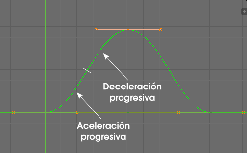

Editor de gráficas
Debajo del editor Planilla de tiempos está el Editor de gráficas  que se caracteriza por representar las famosas curvas de interpolación.
que se caracteriza por representar las famosas curvas de interpolación.
Esa es la curva que determina el movimiento que tiene el cubo durante la animación. Vamos a analizar un poco esa gráfica:
- Se encuentra de un color verde resaltado porque hemos seleccionado el nodo de la parte superior.
- Es verde porque en nuestra animación el desplazamiento del cubo es a lo largo del eje Y (verde).
- Tiene tres nodos (bajo, alto, bajo) definidos por los tres keyframes de la animación. Podemos seleccionar con el método de siempre. Estas posiciones nos dicen que el valor de la coordenada "Y" al comienzo es cero, luego asciende positivamente y regresa al valor cero.
- El tipo de curva que se ha generado es una bezier de tipo suave. Entre el primer y el segundo nodo el arranque de la curva es en aceleración progresiva para terminar en un segundo tramo de frenada también progresiva. No hay velocidad constante ni freno brusco.

Tras este análisis de lo que vemos aclararemos alguna cosa de las que no están tan a la vista. Por ejemplo, el hecho de que el cubo se haya desplazado a lo largo del eje Y no significa que no se haya almacenado también la información del eje X y del Z. Si seleccionamos uno de los nodos que se adivinan en la parte baja...
...y lo desplazamos hacia arriba.
La curva es de color azul (podría haber sido la roja) con lo que estamos alterando la información inicial que decía que la altura (eje Z) permanecía constantemente a cero.
Como hemos desplazado sin restringir el movimiento es casi seguro que ese nodo ha dejado de estar en el fotograma 50 y así se evidencia en el editor Planilla de tiempos .

Si hubiera coincidido con el keyframe definildo con anterioridad, la información se habría añadido a él y sería todo mucho más sencillo de editar después (menos keyframes, información compartida...).
Navegación
Además de todo lo que ya sabemos sobre navegación y que puede aplicarse aquí debemos atender a estos dos asuntos:
- En este editor no se alterna entre modos de trabajo, tipo Modo Edición o Modo Objeto. En este caso la tecla "Tabulación" tan solo alterna entre editabilidad/no editabilidad de la curva.
- Aunque algo estresante en un comienzo, es importante coger destreza con la navegación que facilita la combinación "Control_rueda del ratón pulsada" y desplazar tanto arriba/abajo como derecha/izquierda. Se producen zooms muy interesantes para expandir o contraer la visualización de la curva.